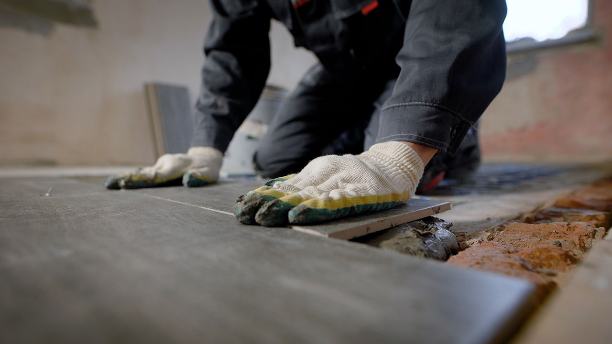

Tile


Tile Floor Installation
Our Tile Floor Installation Services
Once the tile is laid and the mortar has set, we fill the grout lines. Since grout needs a few weeks to completely cure, we’ll come back and apply a grout sealant, if necessary, to prevent stains
Our experts install:
- Ceramic tile flooring
- Slate tile flooring
- Cork tile flooring
- Porcelain tile flooring
- And more!